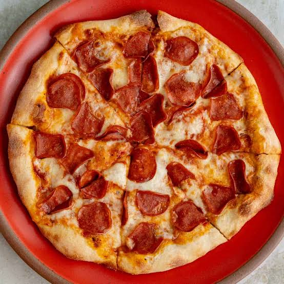

hi! kids! today we will learn about fun facts about pizza !!
5 Fun Facts About Pizza
1. 🍕 Pizza Has Ancient Origins
People have been eating flatbreads with toppings for thousands of years. Ancient civilizations such as the Egyptians,
Greeks, and Romans enjoyed flatbreads with different ingredients.
2. 🇮🇹 Modern Pizza Became Famous in Italy
The pizza we know today became especially popular in Naples, Italy. Traditional Neapolitan pizza is made with simple
ingredients like tomatoes, mozzarella, and basil.

3. 🌎 Pizza Is Loved Around the World
Pizza is one of the most popular foods worldwide! Different countries have created their own unique versions with local
toppings and flavors.
4. 🍍 Pineapple Pizza Is Controversial
Hawaiian pizza, which usually includes ham and pineapple, was actually created in Canada—not Hawaii! It remains one of
the most debated pizza toppings.
here are some videos you may watch for more learnings
5. 🧀 Mozzarella Is a Pizza Favorite
Mozzarella is one of the most commonly used cheeses on pizza because it melts beautifully and gives pizza its delicious,
stretchy cheese texture.